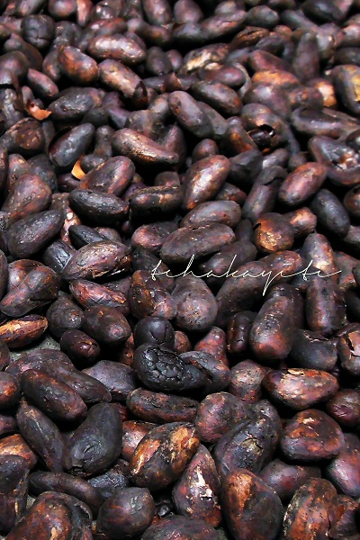
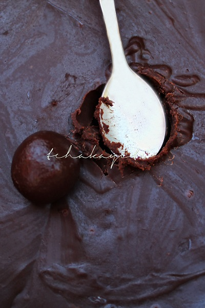
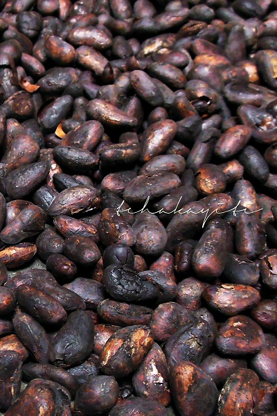
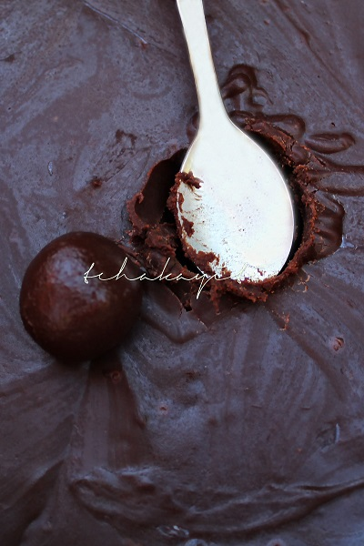
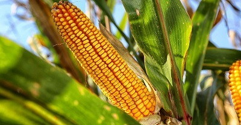
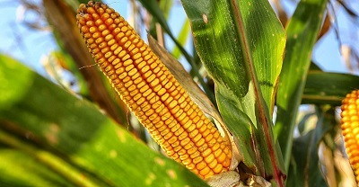

JJR PLUS: Ses Projets
Les projets de JJR sont nombreux. Voici une presentation codee de l'un de nos projets futurs.
Cadre d'intervention
Depuis des années voire des décennies, la production nationale ne cesse d’affaiblir soit par manque de politique publique ou tout simplement par des absences de projet émanant du secteur privé visant à la consolider ou la renforcer. Le maïs est l’un des produits agricoles les plus répandus en Haïti. Il est produit dans la plupart des communes du pays et représente le céréale le plus consommé du pays. JJR corn plus vise à élargir le cadre de la production nationale tout en mettant accent sur la production des produits de qualité à savoir le maïs moulu et l’Akasan. Ainsi, le projet vise non seulement à renforcer la production nationale, mais aussi à produire des produits respectant les normes de qualité.
 

 
